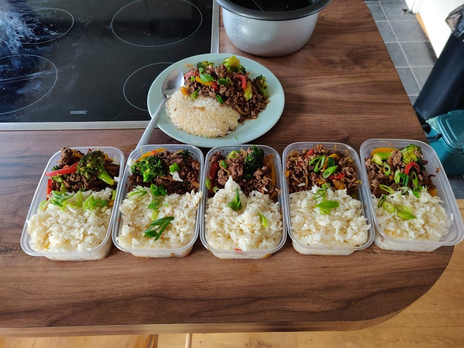

Beef Stir Fry

Description
My go to meal prep, with healthy and affordable ingredients. This recepie of Korean style stir fried beef and vegetables served with rice makes 6 portions and can stored in a fridge to eat throughout the week.
Ingredients
Stir fry ingredients
- 1.5kg lean beef mince (3% used in this recipe)
- 1 Large brown onion
- 3 Carrots
- 2 Bell peppers
- 500g tenderstem broccoli
- 1 Large spring onion
- 6 Cups white rice
- (Optional) Chicken stock cube
- (Optional) Sesame seeds
Korean sauce ingredients
- 500ml Kikkoman soy sauce
- 2 Tbsp sesame oil
- 1 Tbsp rice vinegar
- 1 Tsp lime juice
- 30g Ginger
- 6 Cloves garlic
- 1 Tbsp honey
- 1-2 Tsp Gochujang paste (adjust for heat preference)
Steps
- Add 6 cups of washed white rice to a rice cooker, fill with water to indicated level for 6 cups and optionally add a cube of chicken stock.
- Finely slice one brown onion
- Finely slice 2 bell peppers
- Peel and slice carrots into thin strips. This can be done by slicing at an angle.
- Slice spring onions, separating the white root from the green stems
- Prepare the sauce by mixing all wet ingredients, grating the ginger, crushing the garlic and mixing together well.
- Heat up 1tbsp of sesame oil in a large pan and add the beef mince over high heat
- Brown and separate the beef mince for approx. 3-5 minutes
- Add the onion and bell peppers and cook for 3-4 minutes.
- Add the carrots, brocoli and spring onion stems to the pan and cook for 2-3 minutes
- Add in the sauce and mix together well, reducing the heat to medium-low
- Season to taste
- Serve with the rice, garnishing with the spring onion greens and seasame seeds